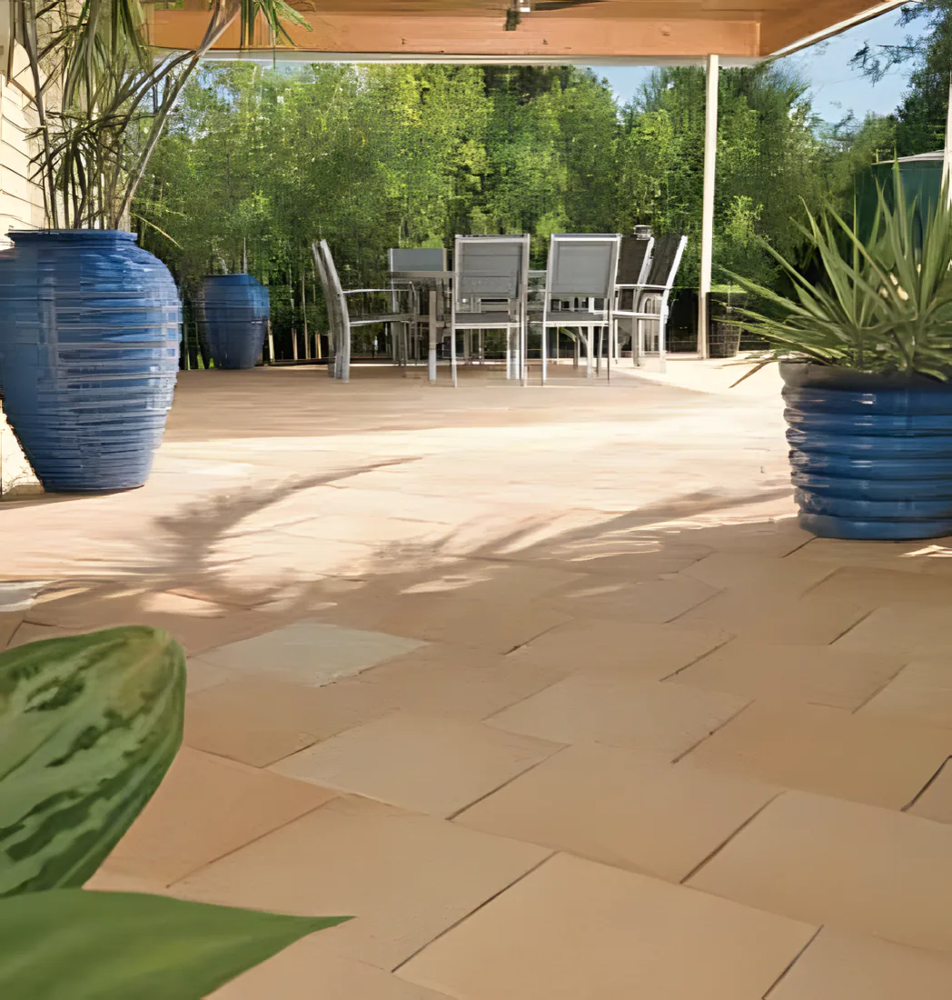
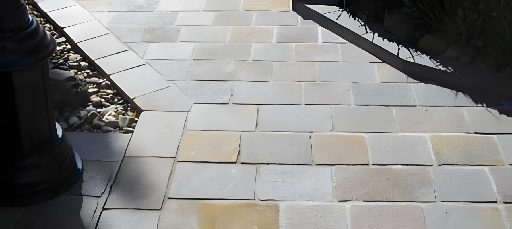
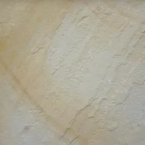
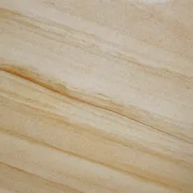
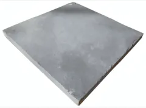
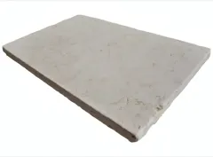
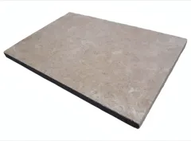
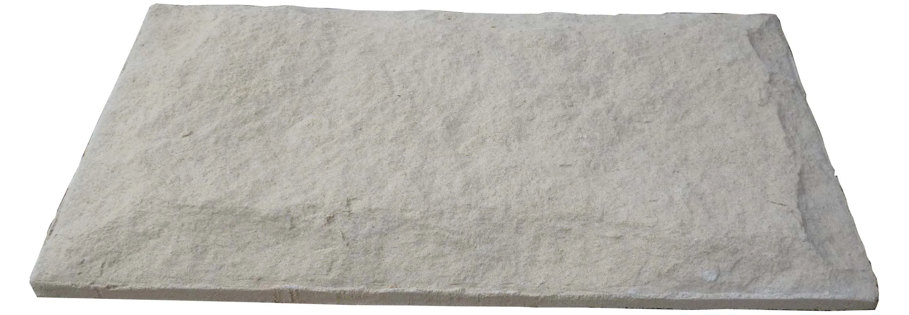

Travertine
Cool under bare feet, and chlorine and salt safe, which is why it ends up around so many pools. Bullnose pieces match the edge.
- Mocha
- Miletus
- Lunar
- Silver
- Finish
- Tumbled
- Colours
- Off white to light brown, cappuccino, walnut, silver grey
Mon–Fri 6am–4pm
(02) 9457 6188Call


Pavers, natural stone, retaining wall blocks, bricks and sandstone cladding for Sydney jobs big and small. Trade prices, direct to the public, from our showroom and yard at Mt Kuring-gai.
Pavers, stone, wall blocks and bricks at trade prices, direct to the public.
7 Mundowi RoadMt Kuring-gai NSW 2080, off the F3
Mon–Fri 6am–4pmSaturday by appointment
Seven ranges, from the big paving brands and from our own Countrystone. Open a row to see what's in it, then ring us with the size of the job for a price.
Dry pressed for smaller jobs, wet cast for bigger, busier areas that need to last. Austral, Boral, Villastone, ECS Masonry, Baines Masonry and PGH.

Kiln-fired clays and shales, warm and earthy, easy for a do-it-yourselfer to lay. We keep them in stock at the showroom so you can pick up or have them delivered quickly.

Pavers and tiles cut from real stone. Expect natural colour blends and variation from one piece to the next: that's the point of it.
Most of our wall blocks go together with no mortar, so a weekend do-it-yourselfer can build a sound wall. For anything bigger we have the blocks for engineered and crib walls.

Sandstone-look fascia, corner quoins and capping for walls and piers, cut to your job so the height stays even all the way round.

House bricks from Austral, PGH, Boral and Namoi Valley, and concrete hollow blocks and caps in plain and designer finishes.

Everything to finish the job: sealers for stone, clay and concrete, Noskum for white stains on brick, Pave-Lok jointing sand, grout guns and CTA adhesives.

Different jobs want different pavers. Tell us what you're laying and how big it is, and we'll point you to the right product.

Bullnose pavers for the edge, cut to the shape of the pool. Travertine is chlorine and salt safe.

Thick flagstone and wet cast pavers, or flamed granite, to take cars and heavy machinery.

Retaining wall blocks with no mortar, from a garden edge to 1200mm as a gravity wall.

Cobblestone pavers for walkways and gardens, porphyry cobbles included. Quick to lay.
You choose the stone and the colour; nature does the rest. Each paver carries its own blend and variation, so come and see them at the showroom before you buy.
Cool under bare feet, and chlorine and salt safe, which is why it ends up around so many pools. Bullnose pieces match the edge.

One of the toughest stones there is. Made for driveways and busy outdoor areas that take weather and machinery and still look right.

Himalayan sandstone: quartz and feldspar grains cemented together, hard and slow to wear. Seal it near a pool, and never clean it with acid.

Split face
Honed
A wide spread of colour, density and finish, from rustic split face to smooth Kota Blue. Durable enough for foot traffic and cars.

Byron
Madagasgar
PearlEvery block system has a limit as a gravity wall (no footings, no steel). Here is how high each one in our range will go, so you can start from the height you need.
Block sizes in mm (length × width × height). Maximum heights are for a gravity wall, from the makers' specs. Brochures with the full colour range are on the makers' sites; ring or email us for the price.
Makes up the body of the wall. Usually hollow, joined by built-in lugs or by the keys or pins that come with the blocks. Needs capping if there's no top unit.
A standard block with a closed top, so it caps itself. The popular pick for garden edging, or a big wall on a budget.
For larger walls or a formal stone look. Wide enough to sit on, if you want seating in the wall.
Walls with footings, steel and mortar or adhesive: the full 100, 150, 200 and 300 series of concrete hollow blocks and caps, Countrystone facing, and Concrib crib walls, which go up quickly for driveways, building sites and gardens.
We recommend Kuringai Civil for licensed installation.
Countrystone reconstituted sandstone is hand made at our facility, in moulds that give it a real hand-cut face. It's weatherproof, goes over an existing wall or a new one, and every piece varies a little in colour on purpose.

We buy at trade and pass the price on.
Hobbyist or tradesman, it's the same price. Tell us the product and the size of the area, and we'll build the quote to your job.
Mon–Fri 6am–4pm · Saturday by appointment · Sunday closed
7 Mundowi Road, Mt Kuring-gai NSW 2080
In the Mt Kuring-gai industrial area, about 10 minutes north of Wahroonga, just off the F3 Freeway.
The showroom has the paving range out on display, so come and look before you buy. Pick up from the yard or ask about delivery.
| Monday | 6am – 4pm |
| Tuesday | 6am – 4pm |
| Wednesday | 6am – 4pm |
| Thursday | 6am – 4pm |
| Friday | 6am – 4pm |
| Saturday | By appointment |
| Sunday | Closed |
7 Mundowi Road · Mt Kuring-gai NSW 2080